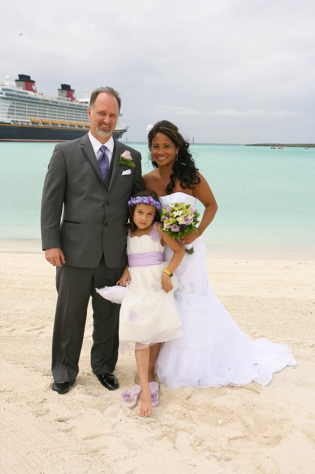

Education

I attended the University of Florida in the early 1990's and attained a BS degree in alcohol research methodology and Health and Human Performance. O.K. The research portion is not officially recognized by the University, but was more of an independent project I conducted with thousands of other students over the course of the five years I attended the breeding ground of the Gator Nation. Yes, five years. I'm not the sharpest tool in the shed. In my defense, I did work full time for a catering company while I was attending UF.
I also am now seeking a second degree at the University of North Florida in Computing and Information Sciences. It's been easier to stay focused the second time around. With age comes wisdom and responsibility.
Career
After graduation I moved to Orlando and worked for Universal Studios as a food service manager. I managed the carts around the park that charged outrageous prices for hot dogs and sodas. Part of area of responsibility was the Barney zone. Having to listen to that song for a couple hours a day for four years created a divine hatred for Barney.
After Universal I spent a number of years running my auto detailing business(Yes, I still do it.). And then managed a restaurant and catering operation for a family owned business for 10 years.
Family
My lovely new wife and step-daughter are the reason I came to Jacksonville and decided to back to school. The drawback to food service is that you predominantly work at night. I wanted to be able to be with my new family, so I decided to go back to school to get a degree in an industry that pays better. I say new, because we married in May of this year. It's been wonderful, although I've noticed that my honey-dew list is growing faster than I can cross items off of the list.
| Course ID |
Course Name |
Meeting Days |
Meeting Times |
| COP 4813 |
Internet Programming |
Wednesdays, Online |
6 to 8 pm |
| MAN 4583 |
Project Management |
Tues and Thurs |
6 to 8 pm |
Favorite Websites